This binary operation on BDDs helps reveal inferences that are missed
by branch pruning due to its sensitivity to variable ordering.
Given two BDDs,  and 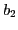, strengthening conjoins
and 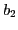, strengthening conjoins  with
the projection of onto the variables of
with
the projection of onto the variables of  :
that is,
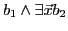, where 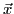 is the set of
variables appearing in but not in
:
that is,
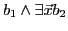, where 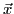 is the set of
variables appearing in but not in  . Strengthening each
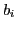 against all other 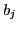s sometimes reveals additional inferences
or equivalences as above. Figure 27 shows an example.
The following is pseudo C++ code implementing strengthening:
. Strengthening each
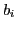 against all other 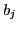s sometimes reveals additional inferences
or equivalences as above. Figure 27 shows an example.
The following is pseudo C++ code implementing strengthening:
BDD Strengthen (BDD  , BDD ) {
, BDD ) {
let
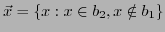;
for all (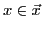) = ExQuant(,  );
);
return 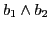;
}
Strengthening is a way to pass important information from one BDD to
another without causing a size explosion. No explosion can occur
because before  is conjoined with , all variables in
that don't occur in
is conjoined with , all variables in
that don't occur in  are existentially quantified away. If an
inference (of the form
are existentially quantified away. If an
inference (of the form  ,
,  , 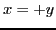, or
, 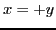, or  ) exists due to
just two BDDs, then strengthening those BDDs against each other
(pairwise) can ``move'' those inferences, even if originally spread
across both BDDs, to one of the BDDs. Because strengthening shares
information between BDDs it can be thought of as sharing intelligence
and ``strengthening'' the relationships between functions; the added
intelligence in these strengthened functions can be exploited by a
smart search heuristic. We have found that, in general, strengthening
decreases the number of choicepoints when used in conjunction with the
LSGB heuristic, though in strange cases it can also increase the
number of choicepoints. We believe this is due to the delicate nature
of some problems where duplicating information in the BDDs leads the
heuristic astray. Strengthening may be applied to CNF formulas
and in this case it is the same as applying Davis-Putnam resolution
selectively on some of the clauses. When used on more complex
functions it is clearer how to use it effectively as the clauses being
resolved are grouped with some meaning. Evidence for this comes from
from examples from Bounded Model Checking (see Section 16).
) exists due to
just two BDDs, then strengthening those BDDs against each other
(pairwise) can ``move'' those inferences, even if originally spread
across both BDDs, to one of the BDDs. Because strengthening shares
information between BDDs it can be thought of as sharing intelligence
and ``strengthening'' the relationships between functions; the added
intelligence in these strengthened functions can be exploited by a
smart search heuristic. We have found that, in general, strengthening
decreases the number of choicepoints when used in conjunction with the
LSGB heuristic, though in strange cases it can also increase the
number of choicepoints. We believe this is due to the delicate nature
of some problems where duplicating information in the BDDs leads the
heuristic astray. Strengthening may be applied to CNF formulas
and in this case it is the same as applying Davis-Putnam resolution
selectively on some of the clauses. When used on more complex
functions it is clearer how to use it effectively as the clauses being
resolved are grouped with some meaning. Evidence for this comes from
from examples from Bounded Model Checking (see Section 16).